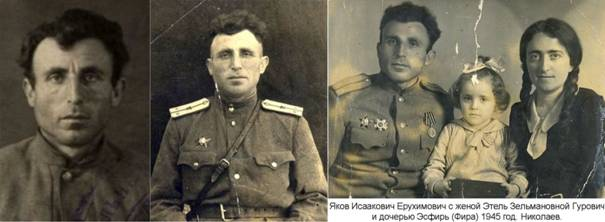

|
Посвящается моей жене и
детям
МОЯ РОДОСЛОВНАЯ.
Яков
Ерухимович
22 марта 1998 года мне исполнилось 84 года.
Я родился 22
марта 1914 года и был седьмым ребенком в семье. Я спешу написать о нашей семье,
так как сложилась наша жизнь так, что что мои дети не знали моих
родителей, росли без бабушки и дедушки, тети и дяди. Многие погибли в
войну 1941-1945 гг., многие давно умерли, а дети не помнят никого, они
даже не знают мою родину, где я родился, как я рос и чего я достиг. У нас
с женой давно была мечта написать повесть о нашей семье, но этому не
суждено было сбыться. Жена давно писала дневники о пережитом во время
войны в эвакуации, мои фронтовые письма. Ну вот я остался один. Шесть
месяцев назад, 7 декабря 1997 года, умерла моя жена, умница, закончила
физмат Одесского университета с отличием, учительница математики,
отличник народного образования, участница всеукраинских чтений по
математике в Полтаве и в Николаеве. О жене мы еще напишем, а сейчас я
хочу вспомнить свое детство.
В 15 километрах от районного центра
Березнеговатое Николаевской области расположились села Большая и Малая
Романовка, еврейские поселения (колонии). Малая Романовка была
расположена на правом берегу реки Висунь, в 1.5-2 километрах от Большой,
которая, в соответствии со своим названием, и была намного больше. В
Малой же Романовке было всего 20-22 дома, составлявших одну улицу вдоль
реки. В начале этой улицы была каменная школа под черепицей, огороженная
каменным забором. В ней были квартира учителя и одна большая комната для
занятий, где одновременно занимались дети с 1 по 4-й классы, которые
сидели рядами по возрасту. Их учили еврейскому и русскому языкам,
математике, географии, истории. Это была начальная школа, а средняя школа,
семилетка, была в Большой Романовке.
Возле школы был очень крутой, даже опасный
спуск с горы, более надежный и пологий спуск был возле синагоги, рядом с
домом Мотла Пальчика, о котором я пишу дальше. Наш дом был вторым во
втором (верхнем) ряду улицы, а в первом доме жил Ойзер Хатомлянский,
сапожник, а его дети, помню, сеяли и убирали хлеба. В третьем доме жил
Исрул Пальчик. Наш дом был лучше соседских, его построил помещик
Фальцфейн, немец, может быть, именно тот, который основал уникальный
заповедник Аскания-Нова в Таврии, но точно я этого сказать не могу. Дело
в том, что мой дед Мотл Ерухимович работал у Фальцфейна водовозом (возил
на волах воду на поля, за что и получил кличку "Цоб-цобе")
больше тридцати лег. За это помещик и построил ему этот дом, который
после смерти деда в 1923 или 1924 году перешел в наследство к моему отцу.
Я помню, как деда хоронили по еврейскому обычаю - без гроба, еврейских
мертвых заворачивали в белый саван, который назывался тахрихим. После
похорон дети умершего сидели на полу на подушках, молились, читали кадиш.
Было тогда моему деду 87 лет, то есть родился он еще в первой половине 19
века.
В этом же доме на два года позже умерла и
бабушка Нехама, маленького роста и добрее дедушки.
У дедушки и бабушки было шестеро детей: четыре
сына и две дочери. Самый старший был мой отец Исаак Ерухимович, второй
сын - Залман, он жил тоже в Малой Романовке, чуть-чуть наискосок от
нашего дома. У него было три сына, две дочери и один приемный сын
(племянник, - сын сестры его жены тети Михлы, родители которого умерли в
голод 1921 года). Третий сын - Иосиф (два сына и две дочери), четвертый -
Фройм (две дочери). Дочерей (сестер отца) звали Фрада и Либа.
У моих папы и мамы (Фейгеле, девичья фамилия
Смоткина) было семеро детей - пять дочек и два сына. Старшая дочь Хая
родилась в 1896 году, Рива родилась в 1898, мой брат Израиль родился в
1900 г., затем Сима (1902), Песя (1908) и Нина в 1912 г. Я родился
последним (мизинчиком) в 1914 г. Мама иногда шутила, говоря:
"Янкеле, ты у меня вышкребок".
Мама была неграмотной, отец мог расписаться и
читать молитвы по-еврейски. Мама была из бедной семьи, она и три ее брата
(Гилька, Мотл и Абрам) рано остались без родителей. Мама была красивая и
добрая. Отец тоже был добрый (я могу вспомнить только один случай, когда
мне досталось от него - я тогда заигрался и перевернул котелок с
похлебкой для всей семьи, - гуманитарная помощь от Джойнта, - который
должен был принести домой; мне тогда было семь лет) и красивый. Я не
помню отца без бороды. Дядя Залман тоже всегда носил красивую бороду,
даже лучше, чем у папы. Дядя Иосиф носил короткую бороду, похуже, а дядя
Фроим так и вовсе брился, но был самый добрый. Я помню, когда мне было
10-11 лет, дядя Фроим подарил мне две пары голубей. Мой папа и дядя Фроим
всегда дружили и работали вместе.
В четвертом доме жил Мотл Пальчик, брат Исрула
Пальчика, а дальше стояла синагога. Дом синагоги был очень хороший, с
оцинкованной крышей. После уборки урожая мой отец шел на работу в
немецкое село №1 (села, где жили немецкие колонисты, в отличие от
еврейских, различались по номерам). Там была паровая мельница, и
крестьяне возили туда солому, которую отдавали топить мельницу взамен
платы за помол. Отец был правщиком при разгрузке соломы, а по субботам
приходил домой, обычно пешком. Брат его дядя Фроим был кочегаром на
мельнице.
В субботу мой отец не работал, ходил в синагогу
молиться. В синагоге было два отделения, одно для мужчин, которые
приходили каждый день, а второе, отгороженное стеной, для женщин, которые
приходили только в праздники. Суббота для евреев была праздничным днем. В
пятницу вечером, после захода солнца, мама зажигала свечи и что-то
шептала. Это была, наверное,, выученная молитва, так как читать она не
могла. Свечу нельзя было тушить, и она горела, пока не выгорала. Следующую
свечу можно было зажечь уже только на следующий (субботний) вечер после
того, как загоралась первая звезда.
Нашу семью составляли 5 дочерей, 2 сына, папа,
мама, дедушка и бабушка, всего 11 человек. Работал же один папа. Правда,
две дочери Хая и Рива вышли замуж. Хая уехала жить в Березнеговатое, но
Рива из состава семьи не вышла. Наоборот, к нам добавился Лева, муж Ривы,
который жил в Малой Романовке, и питались мы все вместе. Но скоро начался
период великих потрясений: Октябрьской революции и голода 1921 года.
Немцы оккупировали Украину в 1918 году, пришлось уступить зал нашего дома
немцам. Они нанесли соломы и спали на полу. Слава богу, тогда они были не
агрессивные. Но оккупанты есть оккупанты.
Они залезли на чердак за нужным им кормом для лошадей
и обнаружили там мою сестру Симу и дочь дяди Залмана Хаю, которые
прятались от них. Им было тогда по 16 лет. Их забрали в штаб на допрос.
Мне тогда было 3-4 года, я еще толком не умел говорить, да еще по-русски
или по-немецки, и громко плакал. Немцы, помню пытались меня успокоить и
говорили: "Янкеле, Янкеле, не плачь, мы тебе дадим цукер, цукер
(сахару)", а я кричал как резаный поросенок.
В 1918 году моему брату Израилю исполнилось 18
лет. Его забрали служить в Красную Армию в кавалерию, это случилось еще
перед началом немецкой оккупации Украины. Его отправили воевать с
бандитами и басмачами в Узбекистан, и он там сильно заболел тропической
малярией. Его списали, и он добирался домой полгода. И вот приходит дядя
Фроим и говорит, что Израиля видели в 60 километрах от дома, в Добром, на
станции. Отец отравился за ним, но чуть не попал в руки бандитов и
вернулся. А бандиты тогда, в 1924 году, были повсюду. В семи километрах
от Малой Романовки, в селе Владимировка, была банда Мелихова. Они делали
набеги на еврейские колонии.
Тогда отец собрался поехать за ним второй раз
другой дорогой вместе с дядей Фроимом. К счастью, тут передали из Большой
Романовки, что Израиль уже сам добрался туда и остановился у дяди Фроима,
надо его забрать. Как только сестра Ниночка услышала, что Израиль
приехал, она побежала за ним как была - босая, хотя уже была глубокая
осень, и лежал мокрый снег. Когда Израиля привезли домой, он был
настолько слаб, что даже не мог, или не хотел, разговаривать. Врач
приписал ему пить свиной жир, растворенный с горячим молоком. Его кормила
старшая сестра Сима, ни из чьих других рук он не принимал еду.
И вот как-то он обращается ко мне: "Яша,
давай поедем завтра с тобой во Владимировку". Я был счастлив, что
брат обратился ко мне с просьбой, и я могу выполнить его просьбу. На
второй день мы поехали на базар. Брат купил сало двух сортов: сало шпик,
со шкуркой, и внутренне сало, которое Сима должна была растапливать и
добавлять по столовой ложке в кипяченое молоко. А тут отелилась наша
корова и стала давать молоко. Мама стала пропускать молоко через
сепаратор и давать брату по пол-стакана сливок утром и вечером и готовить
ему морковные оладьи со сливками. Брат начал поправляться и заметно
набирать силы. Сестра сказала маме, чтобы та не говорила соседям, что она
кормит брата свиным салом, чтобы не сглазили и, не дай бог, не узнали,
что он кушает свиное сало, - ведь свинина евреям запрещена.
У нас была большая семья, мама была совершенно
безграмотная, даже не могла расписаться, зато дети были все красивые,
особенно девушки. Свататься к ним приезжали даже из других сел. Старшая
сестра вышла замуж в село Березнеговатое, точнее, в Нагортав, еврейскую
колонию, которая занимала половину Березнеговатого. Нагортав от
Березнеговатого был отделен балкой. Я всегда любил ездить с братом на
базар в Березнеговатое и Владиимровку. Еще не было видно этих сел, а уже
слышен был звон церковных колоколов, пение петухов на рассвете. Сима
вышла замуж в Ефингар, брат Израиль тоже выбрал себе невесту, которая
жила в Ефингаре. Я помню, приехали с Ефингара и привезли большие яблоки с
красными щечками, как у невесты. Свадьба Израиля проходила в Ефингаре
(кажется, в 1926 году) по еврейскому обычаю, в синагоге и с музыкой (две
свадьбы было у нас с музыкой - у него и у Симы). В 1927 году его жена
Бетя родила дочь Дору, а в 1938 году - сына Аркадия. В 1941 году Израиля
забрали рыть окопы, потом он с семьей эвакуировался в Астрахань, оттуда в
Казахстан, а там его забрали в армию, откуда он не вернулся. Так мы и не
получили ответ, где он похоронен, в последнем его письме ко мне он
сообщил, что бои идут под Харьковом. А Бетя умерла на 80-м году жизни, в
день свадьбы своего внука Толика, ей стало плохо прямо в парикмахерской.
Дора, его мать, вместе с другим сыном Сашей сейчас в Израиле, ее брат
Аркадий с семьей там же.
Сестра Поля (Песя) вышла замуж в 1928 году за
двоюродного брата Алтера, сына дяди Залмана, а в 1929 году родила сына
Фиму. В 1933 году Алтер заболел тифом. Он выздоровел, а сестра, ухаживая
за ним, тоже заболела и умерла в деревне (еврейской колонии) Ингулец,
Широковского района Днепропетровской области. После этого мама захотела
переехать из Романовки в Ингулец (она говорила, что будет ходить на
могилу и разговаривать с Песей). И как раз там, в Ингульце, 11 июня 1942
г. они были расстреляны немцами, наступавшими тогда на Донбасс, - мама,
папа и Лева Яхнин, муж моей сестры Рива. Сама же Рива и ее дочери Бетя и
Нехама были угнаны в концлагерь, где, судя по всему, все и погибли. Это
известие о судьбе своих родных я получил в Восточной Пруссии, как раз,
когда мы пересекли границу. Алтер же погиб в 1945 году при освобождении
Чехословакии.
Итак, шел 1924 год. Мне исполнилось 10 лет. Я
еще не ходил в школу, в хедер тоже не ходил. Босым в школу зимой не
пойдешь. Надо договориться с Мойше с красной бородой, ребе, который через
две недели начнет учить, а пока за эти две недели надо скошенный хлеб
перевезти домой и сложить просушить, пока нет дождей, а то не дай бог
замокнет. И вот брат говорит: "Вчера скосили пшеницу, завтра пойдем
перевозить скошенный хлеб, подготовь грабли и ложись спать
пораньше". Он ушел, а в это время подошли трое незнакомых -женщина и
двое мужчин, один молодой, а другой постарше, - и спросили родителей. Я
позвал маму, и она повела их в дом и открыла двери зала - комнаты гостей,
которая и не для всякого гостя открывалась. Отец, который отдыхал после
молитвы в синагоге, тоже зашел в зал. Они разговаривали часа два и
позвали мою сестру Симу. Через час или больше гости ушли, а Сима (ей было
тогда 23 года) вышла вся покрасневшая и возбужденная. Мама, которая тоже
покраснела, говорит: "Эта женщина - жена Мойше Козвина, молодой
человек - ее брат, ему 26 лет, а пожилой мужчина с седой длинной бородой
- их отец, вдовец Мойше Рябинский, и они посватали Симу".
Начали готовиться к свадьбе. Мама откормила 12
гусей, Незадолго до свадьбы стало ясно, что денег не хватает. Отец
обратился к хозяину мельницы и пригласил на свадьбу его сына Рахмиеля.
Хозяин подарил на свадьбу мешок (или два?) лучшей муки и одолжил отцу
деньги. Свадьба была в январе 1925 года, с музыкой, мы наняли оркестр во
главе с Гершлем Баркаганом, который славился по всей Николаевской и
Херсонской области. Исполняли еврейскую музыку, танцевали фрейлехс, шер,
семь-сорок. Когда Гершл Баркаган играл на кларнете и скрипке "Ди голден
юх", все женщины и мужчины плакали. К сожалению, я не могу описать
эту свадьбу так, как описал бы ее еврейский народный писатель
Шолом-Алейхем. Это была первая свадьба в нашей семье. Ефингар находился в
60 километрах от Романовки и 60 километрах от Николаева. В начале войны,
в 1941 году, Аншель и Сима с тремя детьми, Рахиль, Хаюсей (Раей) и Полей,
организовали эвакуацию колхоза эшелоном. Те колхозники, которые решили
эвакуироваться, остались живы, а оставшиеся погибли в Ефингаре. Но и те
ефингаровцы, которые выжили, не вернулись в Ефингар, так как соседи из
окрестных сел растаскали весь Ефингар, -домов 500, не меньше, - не
оставили камня на камне. То же случилось и с Романовками, только в
Большой Романовке остались синагога и магазин. Даже на кладбище не
осталось следа от могил наших предков, дедушки Мотла, бабушки Нехамы, и
других родственников. Такой же грабеж я наблюдал еще маленьким, когда
крестьяне растаскивали имение помещика Фальцфейна в 1918 году. Сейчас
власти переименовали Ефингар в село Плющевка. Нет теперь Ефингара.
После войны я не был в Ефингаре, но в Большой
Романовке был два -три раза, ездил на братскую могилу с единственным
племянником моей жены, Владиком Гуровичем, который сейчас живет в Израиле
и обрел вторую родину - берегите ее. Нет Малой Романовки - нет Большой
Романовки. Есть братская могила в которой похоронены 1100 человек, мои
родственники. На могиле табличка: "Здесь похоронены 1100 жителей
с.Романовка". Между тем, в расстреле принимали участие местные
жители, полицаи, наемники.
Теперь я должен вернуться к тому, чтобы описать
кто же приходил сватать нашу красавицу Симочку. У Мойше Рябинского было 4
дочери замужем, трое жили в Николаеве, а та, что приходила, жила в
Большой Романовке. Сам же Мойше Рябинский, и его сын, жених Аншель, а
также младший сын Ошер, 13 лет, и еще две молодых и незамужних дочери,
Туба, 18 лет, и Шендл, 16 лет, жили в еврейской колонии Ефингаре. Возраст
Мойше и моего отца был почти одинаков, дочерей у него было на одну
больше, чем в нашей семье - пять, а сыновей столько же - два. Всю жизнь
он прожил с невесткой, в эвакуации тоже был с ней, а не с дочерьми, хотя
сына Аншеля, мужа Симочки, во время войны забрали в армию. У нее на руках
он и умер в эвакуации, в Северном Казахстане, У Симочки был золотой
характер, она никогда не жаловалась. К тому же, Мойше был почти слеп. А
сколько трудностей Симе пришлось пережить в эвакуации и после! Она была
точь в точь как моя мама. Зато она и успела выдать замуж трех дочерей и
нянчить шесть внучек и внуков.
Я никогда не забуду, когда уже спустя много лет
после войны, после двадцатилетней разлуки я встретился с младшей сестрой
Ниной в Кисловодске в 1959 году, мы не могли сказать друг друга ни слова
-так щемило глаза и сердце. Такими были мама и папа, такими были мы все,
их дети. Такой был Израиль, такие и наши дети из поколения в поколение.
Такая была наша мама, отдавая нам все свое тепло, и ушла навек. Так
устроен мир, и ничего нельзя поделать.
В 1931 году я закончил досрочно еврейскую (то
есть с преподаванием на еврейском языке) среднюю школу в Большой
Романовке и получил направление в Еврейский техникум механизации и
электрификации сельского хозяйства, который находился в Херсоне на улице
Гоголя, 14. В 1935 году я закончил этот техникум со специальностью
техника по ремонту и эксплуатации автомашин и тракторов и был направлен
на работу завгаром Нововоскресенской МТС в село Ново-Архангельское
(станция Блакитная). Там я работал 2 года, и в 1936 году, в начале
октября я получил повестку явиться в Нововоронцовский райвоенкомат: меня
призвали на военную службу (Забайкальский военный округ, 6-я
механизированная танковая бригада), и через три дня явиться с вещами. Мне
предстояло попрощаться с родителями, которые, как я уже писал, вместе со
старшей сестрой Ривой переехали жить в колонию Ингулец. Я ехал туда 2-й
раз, первый раз был, когда в Ингульце умерла моя сестра Песя. Тогда мы с
папой шли пешком с Малой Романовки всю ночь (часть которой пришлось
спасаться от волков, из-за чего и опоздали, в конце концов, на похороны)
и полдня, через станцию Николокозельск. А сейчас меня отвезли до
Апостолова, оттуда на Долгинцево и дальше, за Кривой Рог, еще 18
километров на попутной телеге. На обратном пути я немного опоздал в
Нововоронцовку, но оттуда нас отвезли на какую-то станцию, где был
сборный пункт. Нас поместили в грузовой вагон, переоборудованный для
перевозки людей и отправили сборным эшелоном.
Мы ехали до Забайкалья две недели. В Иркутске
нас искупали, а на следующий день мы прибыли в Улан-Уде, столицу Бурятии,
и на 77-м разъезде мы повернули на маньчжурскую ветку КВЖД. Утром в 6.00
громкая команда "Подъем!", через три минуты выйти строиться на
утреннюю гимнастику, а на улице мороз -5°. Минут двадцать физзарядка и
бег - километр туда и обратно.
Еще когда призывали в армию, спрашивали
специальность. Я сказал, что закончил техникум, и что у меня есть права
на вождение автомобиля. Так что, когда мы прибыли в часть, меня отправили
в парковый взвод шофером автомобиля ЗИС-5. Парковый (хозяйственный) взвод
обслуживал танковую бригаду.
Забайкальский климат - самый суровый, зима
начинается ранней осенью, кончается поздней весной. Зимние морозы в
среднем -50-55°, в 1937 году несколько дней стоял мороз -63°, на посту
стояли по 20 минут. Хотя мы были одеты тепло (нам выдавали валенки,
полушубки с овчиной), надо было следить, чтобы в палатках не погас огонь
в железных печках. Были случаи, что печка потухла, солдаты спят, а
дежурный сам заснул. Каждый должен был одевать шерстяной подшлемник. И
так прошла первая зима 1937 года. Между тем начались репрессии в армии.
Объявили на десятиминутке, что маршал Блюхер арестован как враг народа и
японский шпион. (Во время разгрома японцев на озере Хасан Блюхер
командовал в белом кителе, что, якобы, было знаком для японцев и т.п.)
Объявили, что Блюхер немец по национальности.
В середине лета 1937 года нас подняли по
тревоге. Забрали все вещи, погрузили в эшелон вещи, машины и танки.
Городок опустел, но жены офицеров остались - их не берут. Куда едем, мы
не знаем. По дороге приказано ни с кем не говорить откуда мы и куда едем,
№ части и т.д. Этот переход через Чуйский перевал (его раньше называли
Чуйский шелковый тракт, по нему шли караваны верблюдов, груженые шелком)
был не простым. Не везде тракт был мощен булыжником, буксовали машины,
встречный транспорт ослеплял машины, да и не во всяком месте узкий тракт
позволял встречным машинам разминуться. Наконец, за 2-е или 3-е суток мы
одолели тракт, и появился маленький пограничный городок Кяхта,
расположенный на берегу реки Селенга. Саперы навели понтонный мост через
Селенгу, при этом течение было таким быстрым, что в середине моста был
закреплен катер, своим мотором удерживавший мост против течения. Наконец,
и это препятствие мы одолели. К вечеру мы добрались до столицы Монголии
Улан-Батор. В Улан-Баторе, имевшем вид нашего районного центра, были
деревянные и кирпичные дома и юрты, стоявшие в два ряда, как улицы.
Наутро нам дали команду ехать по направлению
пустыни Гоби. Дороги в пустыне не было, только тропы, протоптанные
караванами.
Примерно через 100-150 километров появился оазис
- немного зелени и колодец, источник воды. Этот колодец днем и ночью
охранялся (от отравления!) танками и красноармейским караулом. Воды в нем
было мало, хотели его углублять, но побоялись разрушить систему подачи
воды, а пока брали воду в первую очередь для кухни и чая, на бойца же,
для умывания и питья, приходился всего один котелок воды в сутки.
Начались морозы, и надо было спускать воду из радиаторов машин или
прогревать их, воды стало совсем не хватать, а японцев, которые, как
ожидалось, пойдут через эти места, все нет и нет. Командование приняло
решение отправить нас в Ундурхан - там было две деревянные казармы
(срубы). В этих казармах и разместили нас, сделали дезинфекцию от клопов.
Топили дровами, которые пришлось возить за 150 километров. Это было
нелегко в условиях монгольского бездорожья, но 3-4 машины ежедневно
ходили за дровами. Питание было неплохое, мяса было больше, чем нам
давали в Забайкалье. Так прожили зиму.
Настала весна. 1938 года. Мы уже считали дни до
осени, когда нас должны были уволить. Репрессии продолжались и достигли
Монголии. В начале года арестовали командующего танковой дивизией
Давидовского, затем командира танковой бригады Синицына и его жену,
работавшую в госпитале. (В это же время прошло сообщение, что по пути в
Москву умер маршал Монголии Сухэ-Батор, а после разоблачения культа
личности сказали, что Сухэ-Батора отравил НКВД.) Я не пишу воинские
звания - офицеров в армии тогда не было, а были товарищ комдив, товарищ
командир роты, взвода и т.д. Солдатам платили 15 тугриков в месяц. Я не
курил, собрал немного денег, купил отрез на костюм, отрез на пальто и
черные кожаные туфли. В Союзе тогда все было по карточкам - и хлеб, и
одежда. А когда увольняли из армии, давали одежду б/у 2-й категории.
В октябре я приехал домой. Родители заметно
постарели. В колхозе жили бедно, на трудодень давали 300 граммов зерна и
держали корову на две семьи. Племянник, сын старшей сестры, уехал в
Кривой Рог и там выучился на парикмахера. Мне уже шел 25-й год, и я решил
уехать в Николаев. Там я устроился на завод им. 61 Коммунара. Вначале я
хотел поступать на завод Андре Марта (так тогда назывался Черноморский
завод), но начальник цеха Поспелов сказал мне, чтобы я пришел через пару
дней. Я ушел и решил, что ждать не буду и пойду на завод 61 Коммунара. Я
пришел в отдел кадров в армейской форме и спросил: "Могу я
устроиться у вас механиком в гараже? Я закончил техникум по ремонту
автомашин и тракторов, отслужил два года в армии на Дальнем
Востоке". Он позвонил в гараж. Там как раз был начальник гаража, и
он тут же приехал на машине. Я с ним поговорил минут пять, рассказал, что
я служил в армии два года на машине, а до армии два года работал завгаром
в МТС, так что уже некоторый опыт у меня есть. Он вызвал старшего
механика Воихевича Ивана Федоровича и сказал мне: "Пока ты пойдешь
сменным механиком, работа две смены через день, будешь приходить со
второй смены". Я сказал, что это меня устраивает, потому что повысит
мою квалификацию. Я был горд, что я работаю на заводе, да еще на
судостроительном. На этом заводе имени 61 Коммунара я отработал почти 55
лет, хотя и с перерывами не по моей вине, о чем напишу дальше.
В Николаеве я снимал квартиру и часто ходил в
гости к моему брату Израилю. И вот как-то я прихожу к нему, а его жена
Бетя мне говорит, что меня спрашивал мальчик с Херсона, который
остановился у Хаима Куклинского. Хаима Куклинского я хорошо знал по
Романовке, где он был чтецом - он хорошо читал по еврейски Шолом-Алейхема
с юмором. Он приезжал в Малую Романовну, собирал женщин в одной хате и
читал им Шолом-Алейхема. А еще Куклинские при нэпе держали сыроварню.
Итак, я пришел к Куклинскому, а дома только его жена Сара. Я ей говорю:
"Я Вас знаю, Вы жили на Большой Романовке, Ваш дом был почти рядом
со школой." Она спрашивает: "Как Ваша фамилия?" Я говорю:
"Ерухимович". Она: " Я Вас не знаю". Я: "Как Вы
можете меня знать, когда я моложе Вашего мужа лет на 12-14?" Она:
"Я знаю Яшу Ерухимовича, его отец Иосиф". Я ей говорю:
"Это мой двоюродный брат, он ровесник моего брата Израиля
Ерухимовича и женат на Нехе Куклинской, которая жила в Малой Романовке в
крайнем доме со стороны Потлоха. А еще Неха подруга моей сестры
Симы". "Ну, Сима моя ровесница и подруга", - говорит Сара.
Итак, мы разобрались немного кто есто кто. Стали разговаривать. Сара говорит:
"Вы знаете, у нас сейчас большие волнения в семье. Мой старший сын
Йоселе воюет в Финляндии, я уже давала ему две телеграммы, а ответа все
нет". Она достала фотоальбом и показала в нем фото сына. Я взял
альбом, начал перелистывать и спрашивать: "Кто это? А кто это?",
пока не дошел до фотографии, где Этюша сфотографирована с Лилей -Лиле там
10 лет. Фотография мне понравилась, а тут и пришел этот мальчик с
Херсона. Это оказался Моня, внук Песи Левиной, подруги моей мамы.
Я говорю
Саре: "Я бы не
возражал» если бы Вы
нас познакомили", а та говорит: "Она сейчас находится в
Одессе, поехал удалять себе гланды, так что лучше подойдем завтра к моему
брату Борису Гуровичу, он женат на нашей двоюродной сестре Саре. Я Вас познакомлю
с ними, и Вы договоритесь, когда придти". Я так и сделал.
На следующий день Моня уехал домой. Не знаю уж,
о чем был разговор после моего ухода у Куклинских, но вдруг я получаю
телеграмму из Херсона: "Яша срочно приезжай Вульфсон X". В
пятницу я еду поездом в Херсон и спрашиваю: "Зачем Вы меня срочно
вызвали?" Хая Вульфсон (мама Мони) и говорит: "Моня приехал и
говорит, что ты женишься на Эте Гурович". Я говорю: "Было бы
неплохо, но пока это моя мечта, мы пока даже не знакомы". Хая
говорит: "Вот поэтому я тебя и вызвала, чтобы сказать, что Этю я знаю,
она серьезная, интеллигентная девушка, постарайся ей понравиться, лучше
не найдешь".
В назначенный день я пришел к Гуровичам. Эти
сначала не было, но потом она пришла. Мы познакомились, и нас оставили
вдвоем. Было уже поздно, одиннадцать часов вечера, семья легла спать, а
мы в другой комнате разговаривали и играли в японские шашки, которым она
меня тут же научила.
На третий день я ей сказал: "Ну что,
Этюша! Ты мне нравишься, ты мне подходишь, если я тебе нравлюсь, то,
думаю, любовь придет к нам обоим." Через несколько дней было 1-е
Мая. Я говорю ей: "Пойдем обедать к моему брату", а она:
"Я на смотрины не пойду". "Ну, тогда извини, я пойду сам,
брат мне дорог, и я сказал ему, что приду 1-го Мая на обед с тобой."
Бетя меня встретила и начала отчитывать: "Тебе, наверное, стыдно,
что твой брат извозчик!" Я говорю: "Бетя, успокойся", а
она ни в какую. Тогда я ушел. Брат пришел и ушел, не став обедать! На 2-й
день я к Эте не пошел и 3-4 Мая тоже не пошеп. 5-го Мая я вижу - она
идет, спрашивает соседей где я здесь живу. Она зашла и спрашивает:
"Ты заболел, почему не приходишь?" "Что же приходить,
когда ты нас всех перессорила", отвечаю я. Она улыбнулась и говорит:
"Я заходила к Бете и извинилась перед ней, а Бетя мне
улыбнулась". На этом конфликт был исчерпан.
Я тогда жил на квартире у Абраши Шинова, с его
женой Лизой я дружил еще с детства - мы вместе занимались в школе еще в
Малой Романовке, где я получил начальное еврейское образование. Потом я
учился в Большой Романовке. Там был и сельсовет, его председателем был
Зяма Айнбиндер. Начали организовывать колхоз, назвали его именем Цюрупы.
Не знаю, кто-то посоветовал или дядя Залман сам догадался и понял
обстановку, но он подал заявление в колхоз и на следующий день все сдал в
колхоз - и лошадей, и сбрую, и инвентарь.
Это было для всех неожиданностью, и люди стали
думать: "Залман все сдал в колхоз, а мы что, лучше его?" Вся
Малая Романовка вступила в колхоз и дядю Заламана выбрали завхозом.
А Абраша Шинов, приемный сын дяди Залмана, уехал
в Николаев и поступил на завод имени 61 Коммунара. Там он стал
сантехником на кораблях, впоследствии вырос в хорошего специалиста, почти
всегда был на доске почета. На следующий год он приехал в Малую Романовку
и обратился к родителям Лизы: "Я приехал за Лизой и хочу на ней
жениться". Они действительно друг друга любили. Вот я и жил у Лизы и
Абраши Шиновых. Лиза была беременна, должна была рожать второго ребенка.
Старший был сын, и второй ребенок тоже оказался мальчиком.
"Этюша", я говорю, "тебе надо познакомиться
с Лизой и Абрашей". Этюша говорит: "А я только что с ней
познакомилась". Я говорю: "Когда же ты успела?" Она мне
говорит: "Мне соседи сказали, идите на те ступеньки, там на 2-м
этаже живет Лиза, у них на квартире живет молодой человек". Я пошел
к Лизе и говорю: "Я хотел тебя и Абрашу познакомить с девушкой, с
которой я дружу". Лиза мне говорит: "Она же пришла к тебе, чего
я должна была заходить". Я взял Лизу, зашел и говорю: "Этюша,
хотя ты меня опередила, но я должен тебе сказать, кто для меня Лиза и
Абраша. Лиза племянница моей старшей сестры Ривы, а муж Ривы Лева -
родной брат Иойхена Яхнина, прекрасного сапожника, который шьет модельную
обувь, а жена Йойхена Хая-Рохл замечательная женщина, грамотная, в
праздничные дни она прекрасно читает в синагоге, в женской половине,
библию для женщин. У Хаи-Рохл кроме Лизы еще трое детей, самая старшая
Дора, старший брат Гриша живет в Хабаровске, а младший, Изя, парикмахер в
Москве".
Родители жены были религиозны. Ее мать жила
раньше в Добри, еврейской колонии в Баштанском районе. Я решил:
"Какое отношение я имею к родителям? Пусть они молятся, мои родители
тоже верующие, ходили в синагогу". Я говорю Эте (а это было 19
июня): "Завтра пятница, пойдем в загс, распишемся", - у нас как
раз пятница была свободным днем. И мы пошли и расписались, мы стали муж и
жена. В этот же день, 20 июня, мы купили кровать и матрац. До этого Этя
спала на подростковой кровати, на которой я, как ни пытался, поместиться
не мог.
Я знал, что отец Эти всегда заказывал на
субботу фаршированную рыбу. Лучше евреев никто не рыбу не варит. Моя мама
и все мои сестры прекрасно варили фаршированную рыбу. После того, как мы
расписались, нас тоже угостили рыбой. После этого в субботу мы вдвоем
купили хорошую курицу и в воскресенье пошли на базар, где отец работал
резником. Эта дала курицу папе, и он ее зарезал. Значит, курица кошерная.
Но не тут-то было. Этюша поставила на курицу в казане на окно, но пришел
кот и начал его двигать, сбросил казан на пол, и тот треснул. Курицу кот
наполовину поел, а наполовину изгадил.
До войны холодильников не было, не знаю, может
быть для высокого начальства они и были, но в продаже не было. Мы купили
бычков, рыбы было полно, ее привозили с Очакова. Жена почистила их,
пожарила и говорит: "Возьми бычков, они вкусные". Я посмотрел
-сковородка на плите стоит, но бычков и следа нет, кот ни косточки не
оставил. Я прихожу на второй день с работы - кот лежит на диване и спит.
Я снял армейский ремень и ремнем его, пряжкой! Он как прыгнет с дивана,
разбил два стекла в окне и выскочил. Я уже не рад был, что связался с
котом. Пришел на следующий день, не успел дверь открыть, он с плачем и
мявом выскочил и больше не пришел.
Между тем моя жена не стала долго ждать и
говорит: "Меня сегодня тошнило, и я рвала, а вроде ничего плохого не
ела". Я ей говорю: "Через месяц моя жена забеременела, наберись
терпения". Она меня поцеловала.
Жена до войны работала, после окончания
Одесского университета, в 15-й школе. В 1940 году у нее был первый выпуск
-106 класс, и на выпускном вечере мы были буквально через несколько дней
после того, как расписались в загсе. Этот вечер мне забыть. Хотя мне
сейчас 84 года, но и сейчас я помню сияющие глаза учеников. Через 40 лет,
в 1980 году, Этины бывшие ученики пришли к нам и принесли адрес своему
классному руководителю. Я пошел, купил торт, Этюшенька накрыла стол и мы
все посидели три с половиной часа, подняли тосты за тех, которые остались
жить и вспомнили тех, которых никогда уже не увидим. Тогда Этель
Зельмановну посетило 5 учеников: Маня Файдыш, Александр Чунихин, Котов,
Ноля Манелис и еще один, имя которого я, к сожалению, забыл. Все с высшим
образованием, трое из них - участники войны. В следующий раз они посетили
Этю Зельмановну на 50-летие выпуска в 1990 году, 1-го сентября, и тоже
принесли адрес и фотографию оставшихся в живых 11 выпускников с надписью
"Дорогой Этель Зельмановне, нашему любимому классному руководителю
от выпускников 106 класса в честь полувекового юбилея окончания в 1940 г.
нашей родной школы № 15. По поручению всех выпускников Маня Файдыш и
К0". Я вспоминаю случай двухлетней давности. Этюшин ученик Котов
каждый год присылал ей по праздникам - на День Победы и День Учителя -
поздравительные открытки. И вот пару лет назад, когда она уже плохо себя
чувствовала после инсульта, она вдруг говорит: "Яшуня, позвони,
пожалуйста, Котову, спроси, как его здоровье, и поздравь с
праздником". Я позвонил Котову. Ответила его дочь. Я говорю:
"Этя Зельмановна волнуется, что от него нет открытки, и передает
привет". Дочь сказала, что его нет дома. Я спрашиваю, где он. Она
говорит: "Он болен, в госпитале, передайте Этель Зельмановне, пусть
она будет здорова и не болеет". А потом я узнал от Ноли Манелиса,
что Котов уже к тому времени умер, и дочь просто не хотела расстраивать
жену.
Через пару дней после выпускного вечера, для
учителей была организована экскурсия в Москву. До войны я в Москве не
был, даже в Одессе не был. Этюша в Москве тоже не была, и мы решили
ехать. Я не помню, почему, но сначала мы оказались в Харькове. Там мы
посетили художественный музей им. Тараса Шевченко. Музей мне понравился,
особенно картина Шевченко "Наймичка". Я несколько раз
возвращался к этой картине, и где бы ты ни стоял, всюду она смотрит на
тебя как. живая, настолько реалистичны картины Шевченко. Еще мы осмотрели
университет и другие достопримечательности Харькова. Вечером мы сели в
поезд и на следующий день приехали в Москву. В Москве мы осмотрели
Выставку достижений народного хозяйства, Третьяковскую галерею,
Пушкинский музей, мавзолей Ленина и музей Ленина. Вернулись в Николаев.
Отдохнув несколько дней, мы поехали в Ингулец к моим родным. Купили маме
отрез ситца на платье и платок, Риве тоже купили отрез на платье, на
большее у нас денег не было. В Ингульце нас хорошо встретили, но были и
претензии. Начала Рива: "Почему не было свадьбы, зачем женился на
городской?" Я ответил: "На свадьбу мы не потянули, так как я
только после армии, а у Этюши около двух лет назад умерла мама, вы тоже
не богачи. К тому же я приданое от нее не просил, и она приданого от меня
не просила. Мы оба работаем, и все, что надо, наживем. Хочу добавить.
Мама, ты Нине приданое давала? Она уехала в одной рубашке и одном
платьице. Я думаю, она сейчас не голая, одета достаточно. Нине вы свадьбу
делали? Нет, она уехала из Херсона к Иосифу в Запорожье и там родила
Семена. Не до свадьбы было в 1933 году, когда страна голодала, ежедневно
умирали сотни людей. К тому же вы не видите, что творится в мире
-беспрерывные военные тревоги, светомаскировка и т.д. Мы встречались два
месяца, понравились друг другу. Этюше 27 лет, из хорошей семьи. Отец
верующий, - ну, пусть верует, он шойхет. Мне тоже 26 лет. Этя девушка
серьезная, грамотная, закончила университет, работает в школе. Она после
университета выпустила один выпуск, 10-б класс. Когда мы расписались, я
был на выпускном вечере и видел, что дети ее любят, учителя и родители
хвалят. Мы решили съездить в Москву на экскурсию и теперь я привез жену к
вам познакомиться. И потому прошу ее любить и жаловать". Они таких
слов не ожидали. Потом у нас состоялся разговор с мамой. Мама плачет:
"Папа уже не может работать, Рива болеет, Лева (муж Ривы) один всех
не потянет". Я говорю: "Я подам в заводе заявление на квартиру,
и мы вас заберем к себе". Мама говорит: "Как мы бросим Риву,
она болеет, а дети хотят поехать в город поступить в институт". Я
отвечаю: "Пусть ее старший сын, Изя парикмахер, немного
помогает". Мама: "Его же забирают в армию в этом году,
осенью".
Тут нас позвали обедать. Вкусно пахнет горячий
борщ со свежими овощами и молодой картошкой. За обедом за столом сидело
13 человек, места не хватало и мой отец позвал мою жену: "Доченька,
садись ко мне на колени". Кто еще принял Этю, как родную, так это
мой отец! Я сидел рядом, и она сидела у нас на коленях. В тесноте не в
обиде. Рива говорит: "У вас в Николаеве нет где подлечиться, у меня
стало сердце болеть, ноги болят, плохо себя чувствую". Моя Этя
вступает в разговор: "Вы знаете, есть идея. В Николаеве одна из
лучших на Украине водолечебниц, и ее главврач - отец моей любимой ученицы
Ани Бабаджан. Я у нее попрошу, чтобы она у отца узнала, можно ли у них
купить путевку или курсовку в водолечебницу".
После обеда наш разговор с мамой продолжился. Я
ей сказал: "Ты столько лет прожила с Ривой, два года нянчила Петю, а
сейчас ты нужна нам, я тоже твой сын, а у Этюши своей мамы уже нет.
Подождите только несколько месяцев, пока мы немного станем на ноги в
Николаеве". До сих пор не могу успокоиться, когда думаю, что, может
быть, если бы родители успели приехать к нам в Николаев перед войной, они
бы эвакуировались вместе с Этей и остались живы.
Кто сразу принял Этюшу, как свою тетю, так это
племянницы Бетя и Нехама, дочки Ривы. Она сразу нашла с ними общий язык.
На второй день мы все - Этюша и я, Нина, Иосиф и племянницы пошли в
Широкое, районный центр в Днепропетровской области, расположенный в трех
километрах от Ингульца. Этя купила девочкам книги. Она начала с ними
заниматься по математике, и они были в восторге от ее знаний. Бете
предстояло закончить 10-й класс, а Нехама перешла в 9-й. Бетя мечтала
поступить в Днепропетровске в педагогический институт. Вечером Этюша
говорит: "С Бетей приятно заниматься, она способная и быстро
схватывает. С Нехамой дела несколько похуже, с ней надо серьезно
заниматься. Я буду заниматься с ними каждый день по два часа, пройду с
ними немного вперед, чтобы они больше знали в начале учебного года".
На второй день после возвращения в Николаев
Этюша приходит и говорит; "Анин папа сказал, что он дал указание
главному бухгалтеру продать одну путевку в стационаре на сентябрь".
Мы написали в Ингулец Риве, что путевку в водолечебницу мы достали, и
пусть к 10 сентября она будет в Николаеве со справкой из колхоза, что она
колхозница. Тем временем я решил отремонтировать квартиру. Этюша с отцом
жили в одной комнате 32 м. Я нанял печника, он перестроил плиту в полугрубу,
побелил и привел в порядок комнату.
Моя сестра Нина и ее муж Иосиф уехали из
Ингульца с нами вместе и остановились у нас на 2 дня. Вернее, днем они
были у брата Израиля, а вечером ночевали у нас. Потом они уехали в
Ефингар на несколько дней. Они спешили домой, в Хабаровск. У кого
оставался их сын Семен, которому, кажется, было 7 или 8 лет, я не помню,
но он должен был идти в школу - начинался учебный год. Если теперь
оглянуться назад, то мы не знали и не могли предполагать, какие беды
предстоят нашей семье.
Здесь я хочу остановиться и сказать несколько
слов о Нине. В 1932 году она приехала в Херсон, где она жила у дяди
Фроима. Там она устроилась на работу и, наверное, спасла родителей
продуктовыми посылками. Да и я бы без Нины техникум не закончил, если бы
не приходил к ней вечерами поужинать. А когда не приходил, она плакала и
говорила: "Если ты не придешь кушать, я тоже не буду, и не
задерживайся, знай, что я сама такая же голодная, как и ты". А когда
она уезжала в Запорожье к Иосифу, который тогда уволился с Черноморского
флота и устроился работать на Днепрогэс на продуктовую базу, то позвала
меня приехать к ней на зимние каникулы. Когда я приехал в Запорожье (в
1933 году), я спросил Нину, бывает ли она у дяди Залмана. Она сказала:
"Да, была, но не могу туда ходить из-за Алтера, который постоянно
плачет после смерти Песи. Он мне сказал, что не может себе место найти. А
еще сказал, что будет пока жить с родителями и женится только, когда их
сын Фима вырастет. Он не хочет, чтобы Фима знал, что такое мачеха, даже
если она будет хорошая".
С Алтером я встретился в 1941 году, когда меня
забрали на фронт. Наша пехотная дивизия формировалась в 35 километрах от
Запорожья, в городе Орехово на полпути до Бердянска (тогда Осипенко), и я
приехал в Запорожье попрощаться с дядей Залманом и Алтером. Дядя Залман
постарел и плакал. Умерла его жена тетя Михла, забрали на фронт Яшу, а
теперь и Алтера, а старший его сын погиб на войне еще в 1915 году. Моему
племяннику Фиме тогда шел 13-й год. Он сказал мне: "Дяденька, идемте
сейчас к папе, его еще не увезли, он сейчас на сборном пункте".
Когда мы пришли, и Алтер вышел, я его не узнал - он был черный, худой. Я
понял, что его больше не увижу. О его смерти сообщили, что он погиб в
самом конце войны и похоронен в Чехословакии. Сестра Алтера, Хая,
которая, как я уже писал, пряталась вместе с Симой от немцев на чердаке в
1918 году, воспитала своего племянника, а потом и его сына. Она умерла в
Израиле в возрасте 90 лет в 1992 году. Фима и вся его семья тоже сейчас в
Израиле, но перед отъедом туда, уже в конце 80-х годов, Ефим съездил на
могилу отца.
Возвращаюсь в 1940-й год. Итак, Нина и Иосиф
приехали в Ефингар и сказали Симе, что Этя, Яшина жена, достала Риве
путевку в стационар Николаевской водолечебницы. Вскоре они уехали в Хабаровск,
а 5-го сентября 1940 года я встречал на вокзале Риву. Поезд прибыл, она
говорит: "Поедем к Израилю, я пока у него буду жить", а я
отвечаю: "Поедем, но там жить негде, вечером Этя придет с работы, и
мы пойдем к нам". На следующий день Этюша пошла с ней обходить
врачей, а у меня кончился отпуск, и я должен был выйти на работу. Вечером
жена мне говорит: "Я даже не знала, что невропатологом в
водолечебнице работает врач Винницкая, мать моего ученика Виталия
Каплана. Она нас прекрасно приняла, посоветовала терапевта и гинеколога и
назначила ванны. Я думаю, Риву здесь подлечат хорошо". Все вроде
было хорошо.
Чтобы повидаться с Ривой, из Ефингара приехала
в Николаев Сима с дочкой Полечкой. Этюша с Симой сходили к детскому врачу
Факторовичу, он выписал лекарство для Полечки, у которой тогда болел
желудок, и ей стало легче.
У Ривы заканчивалось лечение, и она спешила
скорей уехать домой. Она была благодарна нам с Этей за то, что мы, и
особенно Этя, помогли ей подлечиться, и поняла, что нам сейчас без мамы
не обойтись. Я строил планы: "Сестричка, не волнуйся, сама видишь
наши обстоятельства. Как только Этя благополучно родит, я приеду за мамой
и папой. Здесь живет Израиль, рядом с Николаевом живет Сима, постараемся
забрать и вас в Николаев. Здесь тоже есть куда поступать детям, есть и
институты, педагогический и судостроительный, и техникумы,
судостроительный и строительный, Этя детям поможет, вместе не
пропадем". Мы все были тогда ослепшие, верили советской пропаганде,
что Гитлер не смеет начать войну против СССР. Через пару дней я проводил
Риву, но на душе было тревожно. В условиях строгой секретности все равно
просачиваются слухи, что Николаевский порт забит немецкими кораблями,
грузят зерно с элеватора. Говорят, в Одессе то же самое. Продолжаются
беспрерывные учебы по гражданской обороне, учебные тревоги,
светомаскировки, ночью летают самолеты. Я начал ходить на
подготовительные курсы в Харьковский заочный энергетический институт.
Занятия проходили в школе на углу Пушкинской и Большой Морской. Там же
должны были проходить вступительные экзамены.
А тут парторг говорит: "Через несколько
дней будет партсобрание, надо тебе вступать в партию. Я тебе дам
рекомендацию". Вторую рекомендацию мне дал комсомол. На этом
партсобрании меня приняли кандидатом в члены КПСС, а через неделю это
решение утвердили на заседании бюро райкома партии, и после праздника
7-го ноября я получил билет кандидата в члены КПСС.
Зима 1940-1941 года была хорошая, снега было
много. Предполагалось, что весна будет хорошая и с благоприятными видами
на урожай. Но когда весной стало теплее, снег быстро стаял и вода в
Ингуле стала прибывать. Возникла угроза затопления 5-го и 12-го цехов на
Николаевском берегу и гаража и 27-го цеха на Темводе. Чтобы не вода и лед
не сорвали заводской и йнгульский мосты, их развели, и Темвод оказался
отрезан от города. Катер "Чапаев" не смог причалить к берегу и
забрать людей. Это было в субботу, и ночь на воскресенье мне и бригадиру
слесарей Решетникову пришлось ночевать в общежитии.на Темводе. Утром в 6
часов утра пришли из цеха ремонтники и рассказали, что ночью оторвало
док. Вместе со льдом док прорвал Йнгульский мост и сел на мель в районе
Варваровки. Там образовался завал, который ночью, в темноте, побоялись
взрывать, так что сейчас там пробка, дороги через реку нет.
Решетников предложил идти в Соляные - там лед
еще цел. Мы подошли - действительно, льдина метров 100 в длину и метров
30-40 в ширину была у самого берега. Мы пошли по ней, но вскоре я решил,
что идти по льдине без доски опасно, и мы вернулись. Оказалось, что я
спохватился поздно - льдина уже оторвалась от берега. К счастью, как раз
такая доска, какая была нужна, - метра 3-4 в длину, - уже лежала на
льдине, и я ее подобрал. В это время Решетников, который побежал вперед и
перепрыгивал с одной льдины на другую, упал в воду и закричал:
"Помоги!" Я протянул ему доску, он ухватился за нее, и я его
вытащил. Перебрасывая доску с одной льдины на другую, я стал продвигаться
вперед. Это было нелегко, моя фуфайка вся промокла от пота. Я сбросил ее
и передал доску Решетникову. Так мы довольно быстро почти перебрались
через реку, когда в 20 метрах от другого берега нам встретился солдат,
который шел навстречу, неся с собой резиновую лодку. Он сказал, что мы
уже перешли реку и должны отдать доску ему, а когда я отказался, пытался
отобрать ее. Я оттолкнул его, и он упал в воду. Я кричу Решетникову:
"Солдат тонет!" Вдвоем мы вытащили его, и я ему говорю:
"Видишь, какой ты глупый, я все равно тебе не отдам доску, пока мы
не перейдем на берег, но тут же совсем мало осталось, иди с нами и потом
заберешь доску себе". Добежав до берега, я бросил доску и, не
оглядываясь, побежал домой.
Прихожу, а дома жены нет. Я лег в кровать,
укрылся, выпил полстакана водки и заснул. Через два часа приходит Этюша,
а отец ей говорит: "Твой муж уже два часа дома, а ты неизвестно где
ходишь". Она разбудила меня, рассказала, что была на бульваре
Макарова, где весь город собрался и смотрит на ледоход, и начала плакать
от страха, что я шел через реку, а я ей говорю: "Теперь радоваться
надо, что я уже ее перешел и дома!"
Директор школы (кажется, Лавутин) относился с
уважением к Эте. Как-то он позвал ее и говорит: "Меня вызывали в
гороно и поручили найти хорошего учителя, проверить знания одного
начальника из МВД, который должен ехать в Москву и держать экзамены в
институт красной профессуры и провести с ним консультации". Директор
сказал ей, что эти часы они оплатят. Как оказалось, за эти часы мы
получили еще и другую, особую плату.
Как-то жена постирала мой рабочий костюм. Я
невнимательно положил документы в карман брюк. После работы трамвай был
переполнен но я почувствовал, что меня жмут особенно сильно. Я сразу
понял свою оплошность, но их было трое или четверо. Я начал кричать, что
у меня силком вытащили документы. Я пришел домой и рассказал о своей беде
жене. Она начала меня успокаивать: "Я сейчас пойду в милицию к
начальнику уголовного розыска, с которым я занималась, он нам
поможет". И действительно, он сказал жене: "Не волнуйтесь,
оставьте ваш адрес, завтра ваши документы принесут вам домой. Вся николаевская
шпана на учете, и если они не найдут того, кто вытащил ваши документы, я
их всех арестую". На следующий день я пришел в милицию и обратился к
начальнику. Он позвонил и сказал: "Документы уже нашли и приносили к
вам, но во дворе дворничиха сказала, что такой не проживает. Идите за
ними в Ленинское райотделение милиции, если что не так, звоните
мне". Я пошел туда, и мне дают пачку документов. Я говорю: "Тут
же несколько паспортов!"
"Мы знаем", - говорят мне, -
"отберите Ваши". Я отобрал все мои документы, но оказался
настолько глуп, что не спрятал сразу билет кандидата в члены КПСС, и
милиционер его заметил. Он отобрал его и сказал, что есть указание
найденные партийные документы отправлять только в райкомы партии. Тут я
совершил вторую глупость - не позвонил начальнику и не попросил его
помочь еще раз, думал, что с распоряжением райкома он уже не не может
бороться. В результате я получил взыскание на собрании цеха и на райкоме.
Мне должны были восстановить билет кандидата в члены КПСС, но это все
откладывалось и откладывалось, пока не отложилось надолго -началась
война.
Я получил повестку, что должен явиться для
отправки на фронт. Здесь надо сказать еще об одной накладке, которая
повлияла на мою службу на фронте. После службы в армии я демобилизовался
в 1938 году рядовым. Затем вышел приказ, по которому всем людям со
средним и высшим образованием должны были присваиваться воинские звания
командного состава. Но никакой переподготовки я не проходил, и в этой
повестке меня аттестовали "командиром без звания". Только летом
1943 года, когда я уже был автотехником в 139-ю стрелковой дивизии, в
237-м противотанковом дивизионе, пришло, наконец, целых два приказа, по
одному я получал звание младшего лейтенанта, а по второму -
техника-лейтенанта (я выбрал техника-лейтенанта).
Но в это время Этюша уже должна была рожать. Я
отправил ее в роддом и решил, что покажу повестку на заводе, где у меня
была броня и где мы работали над заказами для фронта, пока надо дождаться
рождения ребенка. Военкомат продолжал требовать, чтобы я явился для
отправки в часть. Утром я пошел в роддом на Малую Морскую. Туда никого не
пускали, но главный врач Фукельман Л.Д. и сестры вывели Этю в коридор и
усадили ее в кресло. Она начала кормить дочку, сказала: "Мы ей дадим
имя Эсфирь, имя моей мамы", и заплакала. Я стал ее успокаивать:
"Папа твой говорит, все будет хорошо, чтобы я ушел на фронт
спокойно, он будет молиться за меня".
Я пошел на завод, просил начальника цеха, чтобы
Этю забрали из больницы и не оставили в Николаеве. На заводе начал демонтировать
станки и грузить в вагоны. Я успел забежать в роддом, сказал Этюше:
"Клянусь, мы с тобой встретимся", поцеловал Фирочку в ножку,
ушел и больше не оборачивался. Наверное, она плакала.
Утром передавали, что
наши войска отступают с большими потерями. Я пришел в военкомат, мне
сказали в 16 часов быть на железнодорожном вокзале с вещами. Никто не
пришел со мной прощаться: Борис
рыл окопы, но без 20 минут 16 пришли Бетя и Израиль, он тоже рыл окопы,
но отпросился. Пришли офицеры из военкомата и указали, кому в какой
вагон. В вагоне все сидели молча. Офицер сделал перекличку, и поезд
тронулся. Все вскочили, кто-то крикнул: "За Родину, за
Сталина!" Провожающие заплакали. В вагоне все стояли, садиться
начали только после Водопоя.
Публикуется без редактирования
07/03/2008

Ерухимович Яков Исаакович
Год рождения: 22.03.1914
Место рождения: колония
Романовка, Березнеговатского района,
Николаевской области, Украина.
Воинское звание: техник-лейтенант
Дата поступления на службу 18.10.1936
Место призыва Березнеговатский РВК, Украинская ССР, Николаевская обл., Березнеговатский р-н
Должности : начальник ремонтной мастерской
Награды:
Ордена:
« Красной Звезды» 12.08.1944
« Отечественной войны II степени » __.04.1945
Медали:
«За победу над Германией в Великой
Отечественной войне 1941–1945 гг.»
«За победу над Японией»
Из наградного листа:
Работая
начальником ремонтной мастерской тов. Ерухимович
показал образцы работы по качеству и количеству ремонта. Технику знает хорошо, дисциплинирован,
вежлив и культурный офицер.
Требователен к себе и подчиненным, личный состав его подразделения
сплочен и являются лучшими работниками в части.
Тов. Ерухимович
имеет склонность к рационализации и изобретательству. Так по его способу
изготовлен прибор оттяжки клапанов, что значительно ускоряет ремонт Обладает организаторскими способностями по сплочению
личного состава. За хорошую работу
по ремонтам от командования полка и бригады имеет несколько
благодарностей и денежных наград.
Достоен правительственной награды ордена «Красной Звезды»
Командир
авто полка
Подполковник Комиссаров
9
августа 1944г.
Из
наградного листа:
Техник
лейтенант Ерухимович работая начальником ремонтной мастерской организовал ремонт автомашин иностранных
марок исключительно образцово. При помощи его рационализаторских и
изобретательских мыслей достигнуты большие результаты по ремонту
автомашин с отличным качеством.
При правильном руководстве Ерухимовича и
его умения руководить производством увеличился выпуск машин из ремонта.
За образцовое выполнение заданий командования техник лейтенант Ерухимович достоин правительственной награды ордена
«Отечественной войны 2 степени»
Подполковник Комиссаров
17
февраля 1945г.
Данные из УПК (учётно
- послужной карты, портал "ПАМЯТЬ НАРОДА").
Ерухимович Яков Исакович
Учетно-послужная картотека
Дата рождения: 22.03.1914
Место рождения: Украинская ССР, Николаевская обл., Березнеговатский р-н, с.
Романовка
Дата поступления на службу: 18.10.1936
Воинское звание: техник-лейтенант
Наименование воинской части: 5 зап.
автобронетанковый полк ЮЗФ,16 автоп 2 автбр
Дата окончания службы: 08.06.1946
Награды: Медаль «За победу над Германией в Великой
Отечественной войне 1941–1945 гг.»,Медаль «За
победу над Японией»
Информация об архиве -
Источник информации: ЦАМО
Номер шкафа: 64
Номер ящика: 17
Ерухимович Яков Исаакович
Учетно-послужная картотека
Дата рождения: 22.03.1914
Место рождения: Украинская ССР, Николаевская обл., Березнеговатский р-н, с.
Романовка
Дата поступления на службу: 15.10.1936
Наименование воинской части: 20 завтоп,16 автоп
Информация об архиве -
Источник информации: ЦАМО
Номер шкафа: 64
Номер ящика: 17
Наградные документы:
Ерухимович Яков Исаакович
Орден Красной Звезды
Наградной документ
Дата рождения: __.__.1914
Дата поступления на службу: __.__.1941
Место призыва: Березнеговатский
РВК, Украинская ССР, Николаевская обл., Березнеговатский
р-н
Воинское звание: техник-лейтенант
Воинская часть: 16 автп 2 автбр СВГК
Наименование награды: Орден Красной Звезды
Приказ подразделения
№: 41 от: 12.08.1944
Издан: 2 автбр СВГК
Информация об архиве -
Архив: ЦАМО
Фонд ист. информации: 33
Опись ист. информации: 686196
Дело ист. информации: 903
Ерухимович Яков Исаакович
Орден Отечественной войны II степени
Наградной документ
Дата рождения: __.__.1914
Дата поступления на службу: __.__.1941
Место призыва: Березнеговатский
РВК, Украинская ССР, Николаевская обл., Березнеговатский
р-н
Воинское звание: техник-лейтенант
Воинская часть: 16 аттп 2 атбр СВГК 2 БелФ
Наименование награды: Орден Отечественной войны II степени
Приказ подразделения
№: 369 от: __.04.1945
Издан: ВС 2 Белорусского фронта
Информация об архиве -
Архив: ЦАМО
Фонд ист. информации: 33
Опись ист. информации: 686196
Дело ист. информации: 2752
Ерухимович Яков Исаакович
Медаль «За победу над Германией в Великой Отечественной войне
1941–1945 гг.»
Наградной документ
Дата рождения: __.__.1914
Воинское звание: техник-лейтенант
Кто наградил: Президиум ВС
СССР
Наименование награды: Медаль «За победу над Германией в
Великой Отечественной войне 1941–1945 гг.»
Дата документа: 09.05.1945
Информация об архиве -
Архив: ЦАМО
Картотека: Картотека награждений
Расположение документа: шкаф 31, ящик 4
Добавлено
29/07/2023
|